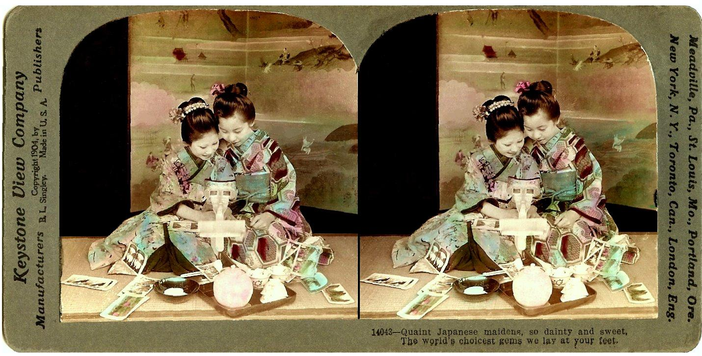
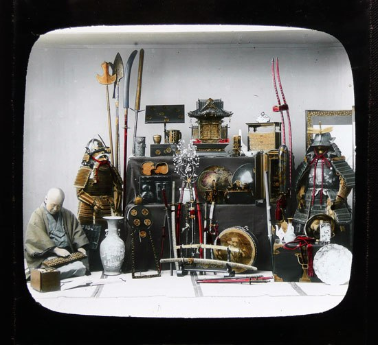

Early Photography


Lesson Plan Idea
Tasks
DISCUSSION QUESTIONS
How is technology indicative of historical change? How are technology and culture intertwined? How do we present ourselves?
Materials for Teaching
Japanese Visual Culture (K-12)

A picture is worth a thousand words
Japan is a nation often associated with photography. Today, most of our cameras are produced by Japanese companies. One of the prevalent images of Japanese people abroad is that of a tourist holding a camera or a group of Japanese tourists posing in front of a famous place for a “memorial photo” (kinen shashin).
This unit looks at the early moments of photographic technology spreading to japan at first as recorders of foreign mainly Westerners trips to the hitherto unknown land, later as a source of income for Japanese entrepreneurs catering to the tourist boom, and finally as an artcraft and product of Japanese culture.
Useful Resources:
Brief History of Photography in Japan from PhotoguideJapan/Photohistory
http://www.photojpn.org/HIST/hist1.html
Allen Hockley, “Foreigners on the Tourist Circuit in Meiji Japan,” MIT Visualizing Cultures
http://ocw.mit.edu/ans7870/21f/21f.027/gt_japan_people/ga1_essay01.html
More Photos of Old Japan
http://www.old-japan.co.uk/librarysearch.asp
Enami
http://www.flickr.com/photos/24443965@N08/collections/
Portraits of Modern Japanese Historical Figures